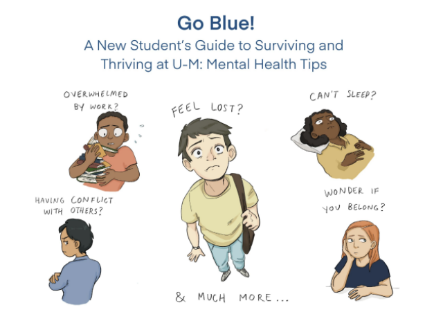
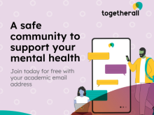

Fall 2024 Mobile Distribution for North Campus
On Monday 10/30 the Maize and Blue Cupboard will transition to shopping by appointment only.
We are happy to offer both in-person and virtual services. CAPS is committed to creating an environment based on our values of multicultural, multi-disciplinary and multi-theoretical practices that allow our diverse student body to access care, receive high quality services and take positive pathways to mental health. Our Front Desk (Michigan Union 4th Floor) is open and ready to help support you -- staff members are available throughout the day to assist you with your needs to answer questions, and get you to the right place. We can be reached by phone at: (734) 764-8312. CAPS has a limited number of private spaces available for students to connect with their counselor via telecounseling. Please contact the front desk for more information on those private spaces. Please Note: During high-demand periods, CAPS will be unable to accommodate class-related interviews and/or projects. Many students are able to find the information they need within our website and our annual reports. CAPS office is unable to participate in scavenger hunts for students due to maintaining the confidentiality of our clients. However, you are welcome to direct students to the wellness zone, which has a separate entrance adjacent to CAPS. If you have any questions, please feel free to contact the CAPS office.

Federal Assistance for Food Insecurity
Located in the basement of the Betsy Barbour Residence Hall, please enter via the Maynard entrance only to ensure privacy for residents. Please contact us if you need ramp or elevator access.
Uwill is an addition to CAPS services that provides students with video, phone, chat, and message sessions with licensed mental health professionals at no cost. This additional counseling option offers students greater flexibility and allows CAPS to expand its service capacity.